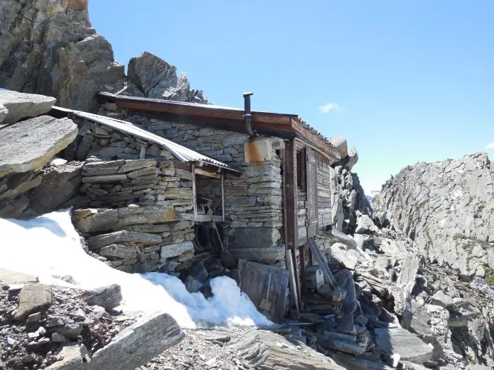
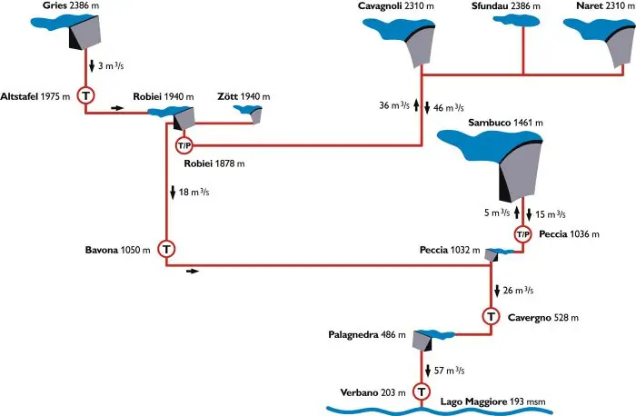

La storia dell’occupazione militare
La costruzione della strada della Val Formazza fino al Passo San Giacomo, tra il 1926 e il 1929, preoccupò la Svizzera e portò alla fortificazione della zona.
Occupazione militare, nascita delle Alpi e grandi impianti idroelettrici: approfondimenti sulla zona del Cristallina.

Le tracce della formazione delle Alpi sono ben visibili: le forze che hanno sollevato la catena hanno portato in superficie i sedimenti marini, e in pochi metri si trovano rocce molto diverse per composizione e origine. Questo influenza anche la flora, legata al tipo di substrato. La fauna è quella tipica delle Alpi: è facile incontrare gli stambecchi della colonia, oltre cento esemplari che non temono l’uomo. Anche l’uomo ha trasformato la zona, con il presidio del confine in tempo di guerra e con le grandi opere idroelettriche.

La costruzione della strada della Val Formazza fino al Passo San Giacomo, tra il 1926 e il 1929, preoccupò la Svizzera e portò alla fortificazione della zona.
Il paesaggio del Cristallina è segnato dall’orogenesi alpina, un processo durato circa 25 milioni di anni.

La zona Robiei-Narèt è ricca di sbarramenti collegati tra loro, che sfruttano al meglio l’acqua per produrre energia elettrica pulita.